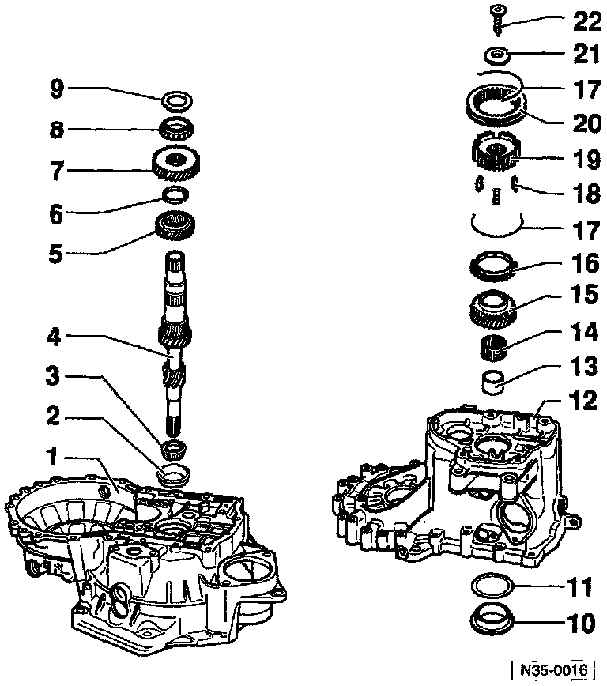

Input Shaft, M/T

1 - Clutch housing
2 - Tapered roller bearing outer race
3 - Tapered roller bearing inner race
4 - Input shaft
5 - 3rd gear (3GR)
6 - Circlip -- Always replace
7 - 4th gear (4GR)
8 - Tapered roller bearing inner race
9 - Thrust washer
10 - Tapered roller bearing outer race
11 - Shim
12 - Transmission housing
13 - Sleeve for needle roller bearing
14 - Needle roller bearing
15 - 5th gear
17 - Spring
16 - 5th gear synchronizer with cast locking lugs on synchro-ring
18 - Lock pieces
19 - 5th gear synchronizer hub (synchro-hub)
20 - 5th gear operating sleeve